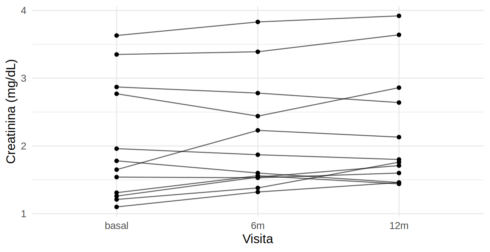

Rows: 434
Columns: 15
$ `ID Paciente` <chr> "P024", "P167", "P110", "P150", "P018", "P392", "P2…
$ Sexo <chr> "Femenino", "F", "F", "M", "m", "Femenino", "F", "f…
$ `Fecha Nac.` <chr> "10/10/1970", "1948-07-13", "06/03/1948", "18/06/19…
$ `Fecha de ingreso` <chr> "24/08/2022", "11/08/2022", "2024-05-30", "28/03/20…
$ Edad <dbl> 51, 74, 76, 40, 35, 51, 81, 73, 73, 56, 69, 33, 53,…
$ `Peso (kg)` <dbl> 65.5, 81.2, 65.0, 70.5, 74.9, 93.1, 74.3, 67.8, 88.…
$ `Talla (cm)` <dbl> 169, 150, 154, 161, 151, 160, 172, 171, 168, 148, 1…
$ Creatinina <chr> "2.1", "148", "2,03", "154", "1.86", "1.42", "1.98"…
$ Unidad_creat <chr> "mg/dL", "umol/L", "mg/dL", "umol/L", "mg/dL", "mg/…
$ `UACR mg/g` <dbl> 7, 69, 126, 473, 255, 650, 360, 18, -1, 73, 154, 73…
$ PAS <dbl> 177, 140, 999, 133, 160, 136, 139, 144, 107, 155, 1…
$ PAD <dbl> 79, 84, 71, 90, 82, 63, 88, 90, 78, 81, 76, 82, 84,…
$ Diagnostico <chr> "ERC diabetica", "Glomerulopatía", "Glomerulopatía"…
$ DM <chr> "Sí", "No", "Sí", "No", "Sí", "Sí", "No", "Sí", "No…
$ fecha_registro <date> 2024-07-03, 2024-07-26, 2024-07-24, 2024-07-16, 20…Datos ordenados (tidy data)
Tres reglas
Una base está ordenada cuando:
- Cada variable es una columna.
- Cada observación es una fila.
- Cada valor ocupa una celda.
La mayoría de las funciones de R (y de los capítulos siguientes) esperan esta forma.
Advertencia⚠️ Lo que hace Excel “cómodo” para humanos y malo para el análisis
- Una columna por visita (
creat_basal,creat_6m,creat_12m): es formato ancho; para modelar pendientes se necesita largo. - Varias tablas en una misma hoja, celdas combinadas, notas al pie.
- Colores con significado (“rojo = fallecido”).
- Un valor y su unidad en la misma celda (
"1.2 mg/dL").
Observa los problemas ya desde la importación: Creatinina quedó como texto (chr) porque algunas celdas usan coma decimal o dicen ND; las fechas también son texto; los nombres de columna tienen espacios, mayúsculas, puntos y paréntesis.
Nombres de columnas
Los nombres con espacios y símbolos obligan a escribir comillas invertidas (`Fecha Nac.`) en cada línea. Convenciones recomendadas: minúsculas, sin tildes, con guion bajo.
names(registro) [1] "ID Paciente" "Sexo" "Fecha Nac." "Fecha de ingreso"
[5] "Edad" "Peso (kg)" "Talla (cm)" "Creatinina"
[9] "Unidad_creat" "UACR mg/g" "PAS" "PAD"
[13] "Diagnostico" "DM" "fecha_registro" registro <- registro |> rename_with(limpiar_nombres) # función del libro (R/funciones_epi.R)
names(registro) [1] "id_paciente" "sexo" "fecha_nac" "fecha_de_ingreso"
[5] "edad" "peso_kg" "talla_cm" "creatinina"
[9] "unidad_creat" "uacr_mg_g" "pas" "pad"
[13] "diagnostico" "dm" "fecha_registro"
Tip💡 Tip práctico
limpiar_nombres() hace lo mismo que janitor::clean_names(): minúsculas, quita tildes y reemplaza cualquier símbolo por _. Hazlo inmediatamente después de importar.
Formato ancho y largo
El archivo lab_visitas_ancho.csv guarda la creatinina de cada paciente en tres visitas, una columna por visita:
# A tibble: 4 × 4
id creat_basal creat_6m creat_12m
<chr> <dbl> <dbl> <dbl>
1 P348 3.63 3.83 3.92
2 P396 1.31 1.56 1.44
3 P125 1.78 1.6 1.46
4 P243 1.26 1.54 1.71Para graficar la evolución o modelarla, cada medición debe ser una fila. pivot_longer() convierte de ancho a largo:
lab_largo <- lab_ancho |>
pivot_longer(cols = starts_with("creat_"),
names_to = "visita", names_prefix = "creat_",
values_to = "creat_mgdl") |>
mutate(visita = factor(visita, levels = c("basal", "6m", "12m")))
head(lab_largo, 6)# A tibble: 6 × 3
id visita creat_mgdl
<chr> <fct> <dbl>
1 P348 basal 3.63
2 P348 6m 3.83
3 P348 12m 3.92
4 P396 basal 1.31
5 P396 6m 1.56
6 P396 12m 1.44lab_largo |>
filter(id %in% unique(id)[1:12]) |>
ggplot(aes(visita, creat_mgdl, group = id)) +
geom_line(alpha = 0.6) + geom_point() +
labs(x = "Visita", y = "Creatinina (mg/dL)") +
theme_minimal(base_size = 13)
La operación inversa, pivot_wider(), vuelve a formato ancho (útil para tablas de presentación):
lab_largo |>
pivot_wider(names_from = visita, values_from = creat_mgdl, names_prefix = "creat_") |>
head(3)# A tibble: 3 × 4
id creat_basal creat_6m creat_12m
<chr> <dbl> <dbl> <dbl>
1 P348 3.63 3.83 3.92
2 P396 1.31 1.56 1.44
3 P125 1.78 1.6 1.46
Importante🎯 En resumen
| Quiero… | Formato | Función |
|---|---|---|
| Modelar, graficar mediciones repetidas | Largo (una fila por medición) | pivot_longer() |
| Tabla para presentar o una fila por paciente | Ancho | pivot_wider() |
| Nombres cómodos para programar | minúsculas, _, sin tildes |
limpiar_nombres() |
Regla: una fila = una unidad de análisis. Si analizas pacientes → una fila por paciente; si analizas mediciones → una fila por medición.
Ejercicio
- Importa
registro_nefro_sucio.csvy renombra las columnas. ¿Cuáles quedaron con_? - Convierte
lab_visitas_ancho.csva formato largo y calcula la creatinina media por visita. - Dibuja la evolución de la creatinina media por visita.